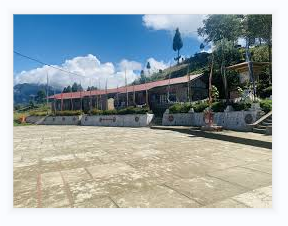
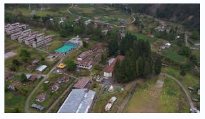
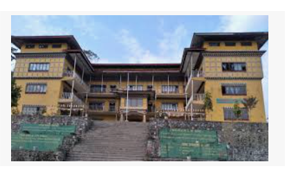

Education Background
Younphula Lower Secondary School
This is where my educational journey began. Younphula Lower Secondary School gave me the foundation in learning, discipline, and curiosity. It laid the groundwork for my academic interest and shaped my early school experience.
Jigme Sherubling Central School
I pursued my higher secondary education at Jigme Sherubling Central School. Here, I developed a deeper understanding of academic subjects and also participated in co-curricular activities that helped build my confidence and leadership skills.
Dungsam Academy
After Class 12, I made the decision to repeat the year at Dungsam Academy to improve my academic performance. This period was one of reflection and determination, allowing me to grow both academically and personally.